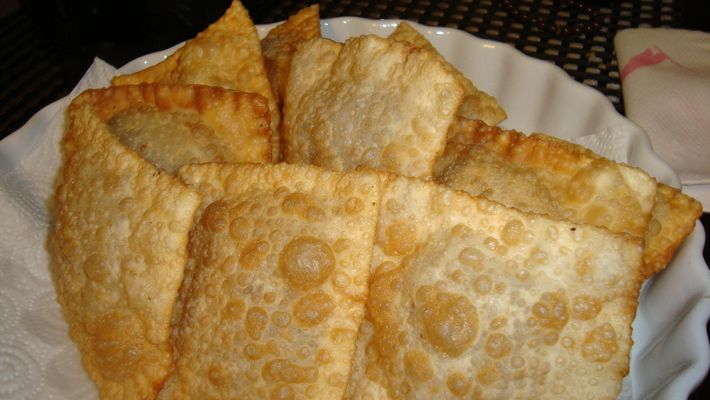

Pastel de Feira

Ingredientes
- 3 xícaras de farinha de trigo
- 1 xícara de água morna (ou um pouco mais)
- 3 colheres (sopa) de óleo (de soja, milho, girassol ou algodão
- 1 colher (sopa) de aguardente
- 1 colher (sopa) rasa de sal
- Farinha de trigo para trabalhar a massa
Modo de Preparo
- Coloque a farinha misturada com o sal em uma vasilha ou uma mesa e abra um buraco no meio.
- Nesse buraco, coloque o óleo, a aguardente e um pouco de água.
- Misture a água e a farinha aos poucos, cada vez pegando um pouco mais de farinha da borda do buraco.
- Quando a massa estiver ficando dura, coloque mais água.
- A massa deve ficar macia.
- Se estiver um pouco grudenta, não tem problema.
- Se estiver muito grudenta, coloque mais farinha.
- Se estiver dura, coloque mais água.
- Em uma superfície enfarinhada, abra a massa com o auxílio de um rolo, de forma que ela fique bem fina.
- Se não ficar fina, ela não fica crocante depois de fritar.
- Recheie a gosto, e feche com um garfo ou com o verso de uma faca.
- Frite em óleo quente (não muito) em fogo médio-alto e escorra com o auxílio de uma escumadeira, antes de deixar para secar em papel absorvente.